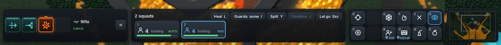
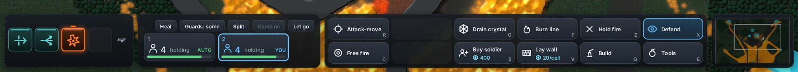
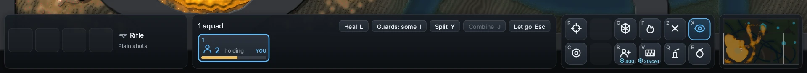
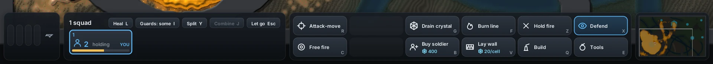
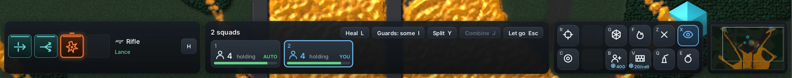
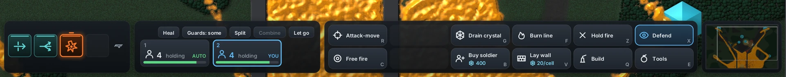
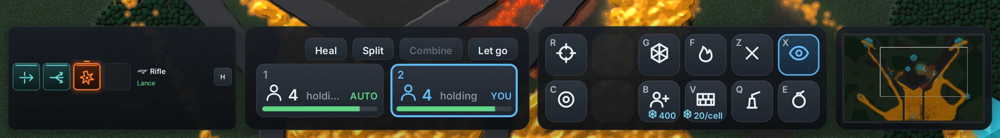
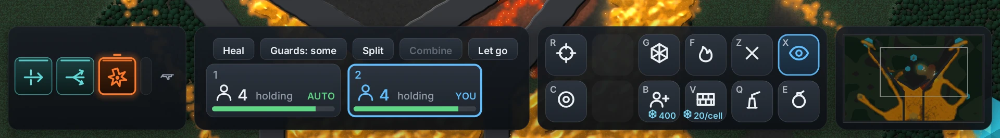
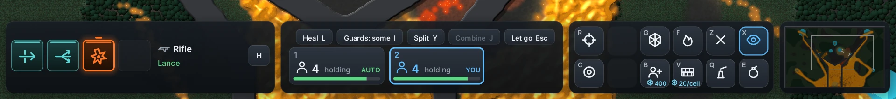
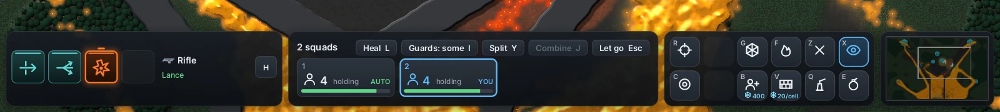

<title>Bottom Bar Allocator</title>
<meta name="claude:viewport-fit-sides" content="cover">
<link rel="stylesheet" href="https://fonts.googleapis.com/css2?family=Inter:wght@400;500;600&family=Space+Grotesk:wght@500;600&display=swap">
<style>
/* One column: each size as a before/after pair with its counts in the caption. */
:root { --bg:#f3f4f6; --fg:#16191d; --muted:#5b6370; --panel:#ffffff; --line:#d9dde3; --accent:#1f8fa8; --tag:#b4561f;
  --display:"Space Grotesk",Inter,system-ui,sans-serif; --body:Inter,system-ui,sans-serif; }
@media (prefers-color-scheme: dark) { :root:not([data-theme="light"]) { --bg:#0f1215; --fg:#e8ebee; --muted:#98a1ad; --panel:#171b20; --line:#2a3038; --accent:#5cc4dc; --tag:#f0a070; color-scheme:dark } }
:root[data-theme="dark"] { --bg:#0f1215; --fg:#e8ebee; --muted:#98a1ad; --panel:#171b20; --line:#2a3038; --accent:#5cc4dc; --tag:#f0a070; color-scheme:dark }
body { background:var(--bg); color:var(--fg); font:15px/1.55 var(--body); padding-left:max(16px,env(safe-area-inset-left,0px)); padding-right:max(16px,env(safe-area-inset-right,0px)); padding-block:32px 48px }
main { max-width:1100px; margin:0 auto; display:grid; gap:28px }
h1 { font:600 2rem/1.15 var(--display); margin:0; text-wrap:balance }
h2 { font:600 1.15rem/1.3 var(--display); margin:0 }
p { margin:0; max-width:68ch }
.lede { color:var(--muted) }
section { display:grid; gap:10px }
figure { margin:0; background:var(--panel); border:1px solid var(--line); border-radius:10px; overflow:hidden; min-width:0 }
figure img { display:block; width:100%; height:auto }
figcaption { padding:10px 14px; font-size:.9rem; color:var(--muted) }
figcaption b { color:var(--fg); font-weight:600 }
.when { display:inline-block; font:600 .72rem/1 var(--body); letter-spacing:.06em; text-transform:uppercase; margin-right:8px }
.before .when { color:var(--tag) }
.after .when { color:var(--accent) }
.stack { display:grid; gap:10px }
ol, ul { margin:0; padding-left:1.3em; display:grid; gap:4px; max-width:72ch }
.note { color:var(--muted); font-size:.9rem }
.wrap { overflow-x:auto }
table { border-collapse:collapse; font-size:.9rem; font-variant-numeric:tabular-nums; min-width:520px }
th, td { text-align:left; padding:6px 12px 6px 0; border-bottom:1px solid var(--line) }
th { font-weight:600; color:var(--muted) }
</style>
<main>
  <header style="display:grid;gap:8px">
    <h1>One allocator for the bottom bar</h1>
    <p class="lede">Step 2 of the three-reviewer review of the menus and HUD (11-15): the bar's panels share out the row in one order, and they drop parts before any words get smaller. Frames come from the cloud's software GPU, in squad mode with the Lance loadout on a rifle. "Before" is main at 2f6ac3f4; "after" is this change.</p>
  </header>

  <section>
    <h2>What changed</h2>
    <p>Before, each panel gave way on its own threshold, one after another. The command card dropped its labels whenever 340 units were not left beside a full gun strip. Next, the gun strip shrank to as little as 60% of its size, words included. Finally, the squad header stepped down by itself. Now the row starts bare and gives out the spare room in this order, each part only where it still fits:</p>
    <ol>
      <li>Every squad button: Heal, Guards, Split, Combine and Let go are orders, so they come first.</li>
      <li>Command labels.</li>
      <li>The squad buttons' key letters.</li>
      <li>The gun's empty slots at full size (stubs until then).</li>
      <li>The gun's Swap (H) button.</li>
      <li>The gun's name column. Until it fits, the gun's icon stands in, and its tooltip carries the names.</li>
    </ol>
    <p>The squad panel takes whatever is left: wider tiles, then the "2 squads" word and bigger text. The gun strip shrinks only as a last resort, and only once it has nothing left but its cards and icon, so no words are ever drawn small.</p>
  </section>

  <section>
    <h2>Over 900 cases (layout test)</h2>
    <p class="note">The cases: 5 screens, including the game's own window on a 1080p monitor (1600×972) and on 1440p (1600×1000); every UI step from 75% to 300%; 1, 4 or 9 squads, or 6 soldiers in RTS mode; guns of 2, 4 and 6 slots; the main page and the build page. The before rule is worked out on the same rows.</p>
    <div class="wrap"><table>
      <tr><th></th><th>Before</th><th>After</th></tr>
      <tr><td>Command card keeps its labels</td><td>300</td><td>384</td></tr>
      <tr><td>Gun strip's words drawn smaller than the UI size</td><td>378 (210 at 60%)</td><td>0</td></tr>
      <tr><td>Strip drawn smaller (cards and icon only, no words)</td><td>n/a</td><td>224: 4 at 150% (a 6-slot gun at 0.98), the rest at 175% and up</td></tr>
      <tr><td>A squad button left off</td><td>not checked</td><td>only the 6-slot gun at the top sizes, with the strip at 60%</td></tr>
    </table></div>
  </section>

  <section>
    <h2>125% on 1920×1080 (the size the review flagged)</h2>
    <div class="stack">
      <figure class="before"><figcaption><span class="when">Before</span>the command card is <b>icons only</b>, and the gun strip keeps <b>Rifle / Lance</b> and <b>H</b></figcaption></figure>
      <figure class="after"><figcaption><span class="when">After</span><b>10 labelled commands</b> and <b>all 5 squad buttons</b>. The keys, the "2 squads" word and the gun's name move off the bar (the gun's icon opens its names).</figcaption></figure>
    </div>
  </section>

  <section>
    <h2>A run planet at 125%</h2>
    <div class="stack">
      <figure class="before"><figcaption><span class="when">Before</span>square buttons; four empty slot boxes and <b>Rifle / Plain shots</b></figcaption></figure>
      <figure class="after"><figcaption><span class="when">After</span><b>labelled card</b>, <b>all 5 squad buttons with their keys</b> and "1 squad"; the empty slots are stubs</figcaption></figure>
    </div>
  </section>

  <section>
    <h2>2560×1440 at 125%</h2>
    <div class="stack">
      <figure class="before"><figcaption><span class="when">Before</span>icons only on the card</figcaption></figure>
      <figure class="after"><figcaption><span class="when">After</span><b>labelled card</b> and all 5 squad buttons</figcaption></figure>
    </div>
  </section>

  <section>
    <h2>200% on 1920×1080</h2>
    <div class="stack">
      <figure class="before"><figcaption><span class="when">Before</span>the strip at <b>60%</b>: "Rifle / Lance" about as small as at 100%. <b>Guards</b> is left off, and a tile reads "holdi…".</figcaption></figure>
      <figure class="after"><figcaption><span class="when">After</span>the strip at <b>0.83</b>, cards and icon only, with <b>no words drawn small</b>. <b>All 5 squad buttons</b> are back, and the tiles read in full.</figcaption></figure>
    </div>
  </section>

  <section>
    <h2>150% on 1920×1080: no room for labels</h2>
    <div class="stack">
      <figure class="before"><figcaption><span class="when">Before</span>square card</figcaption></figure>
      <figure class="after"><figcaption><span class="when">After</span>still a square card: the labelled card is 444 units wider than the square one, and only about 235 are spare here. The room goes to the squad keys and the gun's name.</figcaption></figure>
    </div>
  </section>

  <section>
    <h2>The game's own window at 125% (1600×972)</h2>
    <div class="stack">
      <figure class="before"><figcaption><span class="when">Before</span>square card</figcaption></figure>
      <figure class="after"><figcaption><span class="when">After</span>the same. The labels miss by about 100 units here.</figcaption></figure>
    </div>
    <p class="note">The game opens at 1600×972 on a 1080p monitor, so 100% there draws at 0.9. Two of the open questions in the review would change this picture. Opening the window maximized (question 3) gives the 1920×1080 row above. Moving Heal and Guards onto the command card's two empty squad-mode slots (question 2) frees about 150 units of the squad header, which is enough for the labels at 125% even in this window.</p>
  </section>

  <section>
    <h2>Checked</h2>
    <ul>
      <li>A layout test runs the 900 cases. Panels stay on screen and apart. Every text run sits inside a panel, its pixels touch no other run, and none is under 10.5 units (the square card's costs).</li>
      <li>Only the wordless strip ever draws smaller, and only at 1.3 pixels a unit or more. Every squad button is drawn wherever the strip has not hit 60%.</li>
      <li>At 125% on 1920×1080 with one squad and a 4-slot rifle, the card keeps its labels. At 100% the strip keeps everything.</li>
      <li>The test caught Guards dropped at 200% when the squad panel got its need to the last float; the needs now carry a unit spare.</li>
      <li>Cost: the allocator takes 0.012 ms a frame (10,000 calls), against 0.085 ms for the whole HUD draw.</li>
    </ul>
  </section>
</main>
